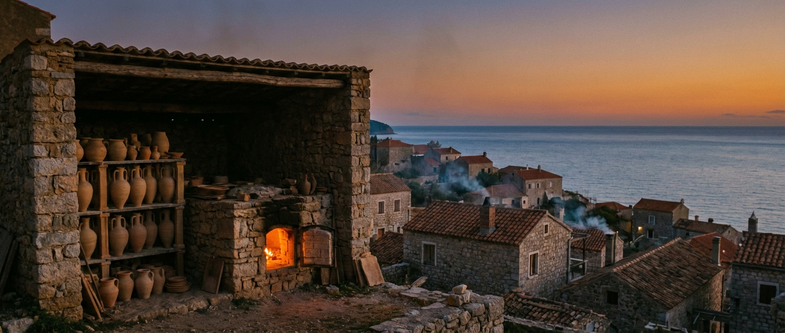
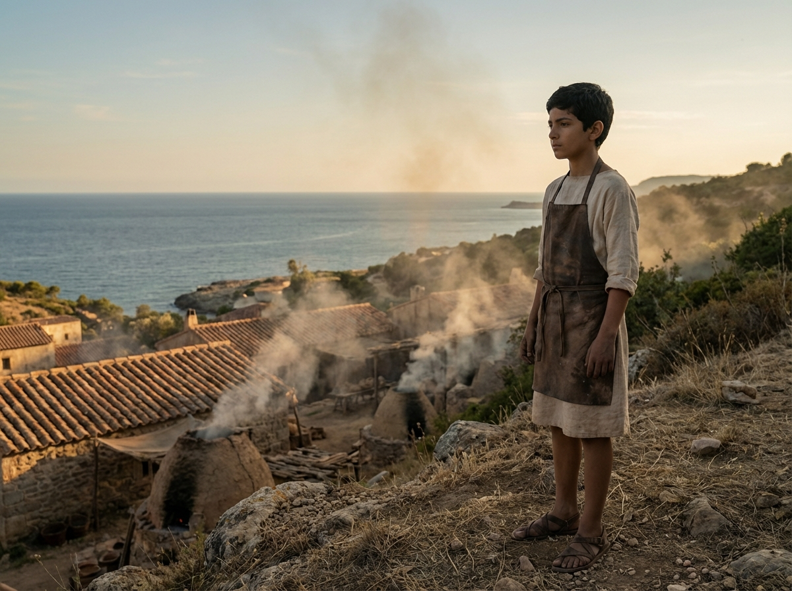
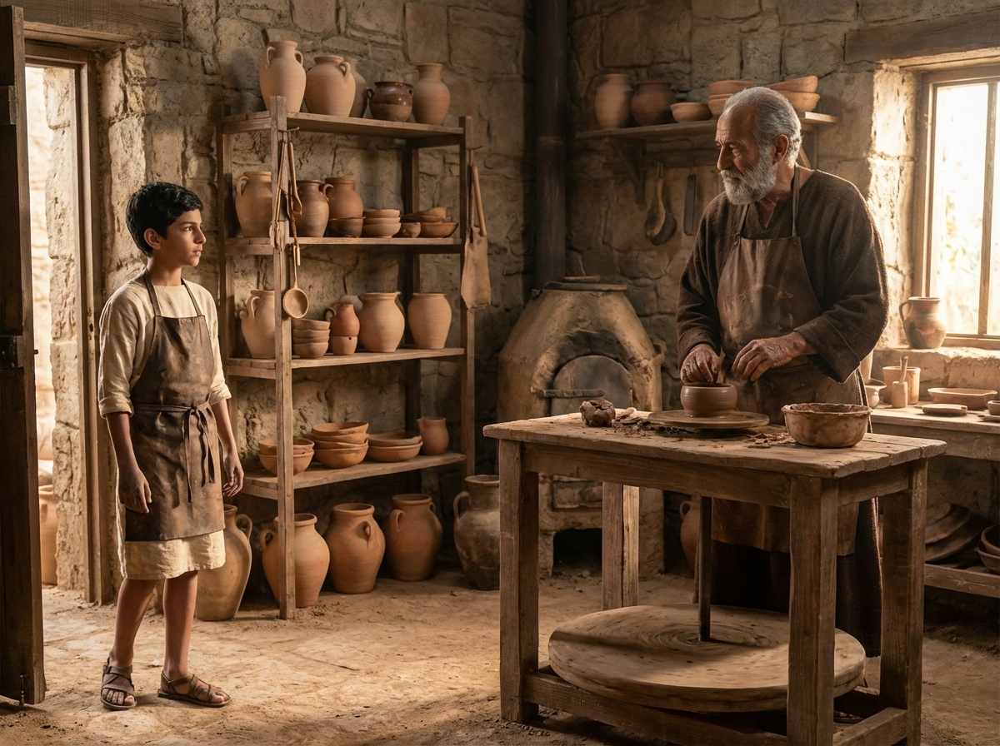
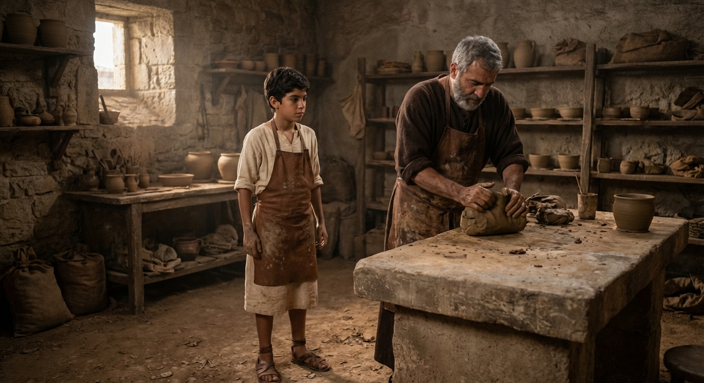
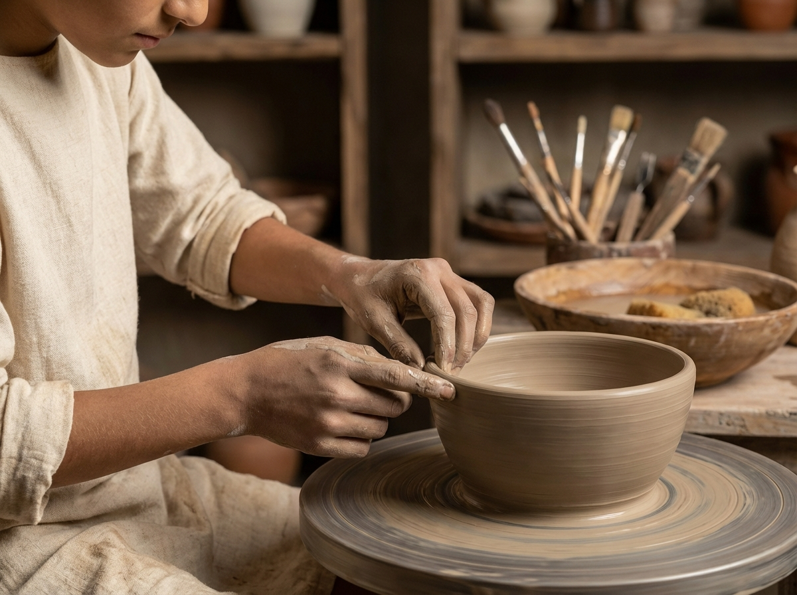
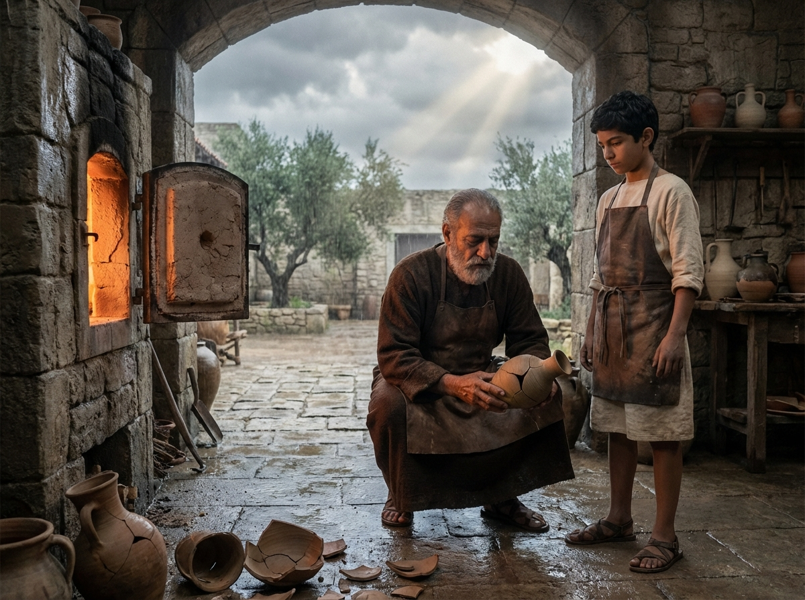
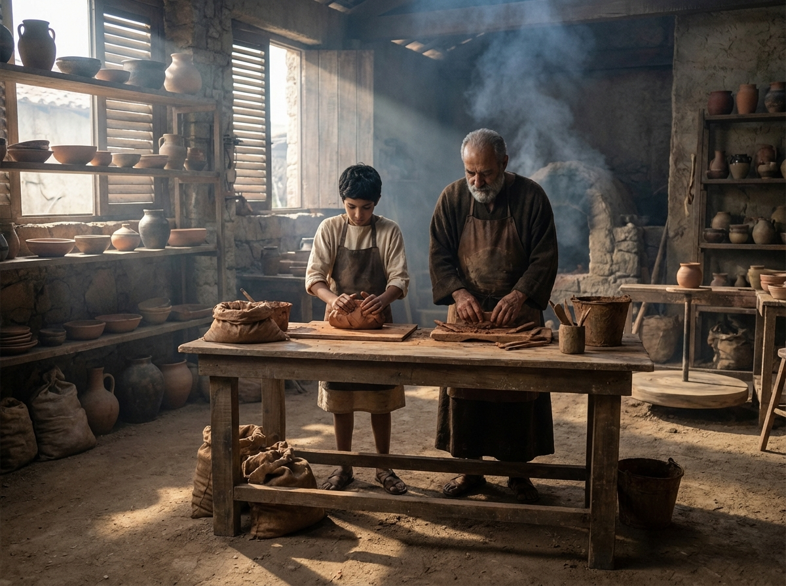
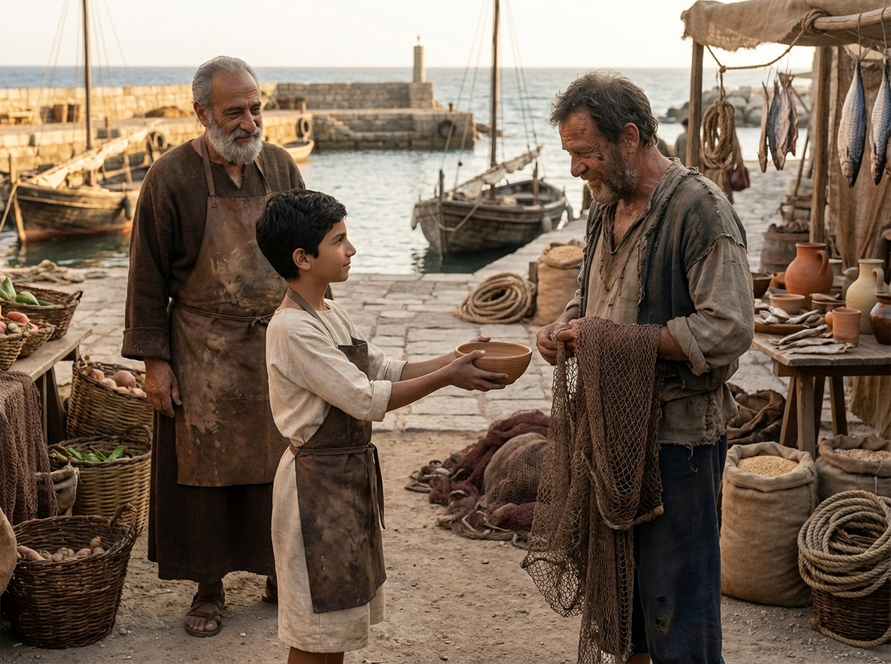
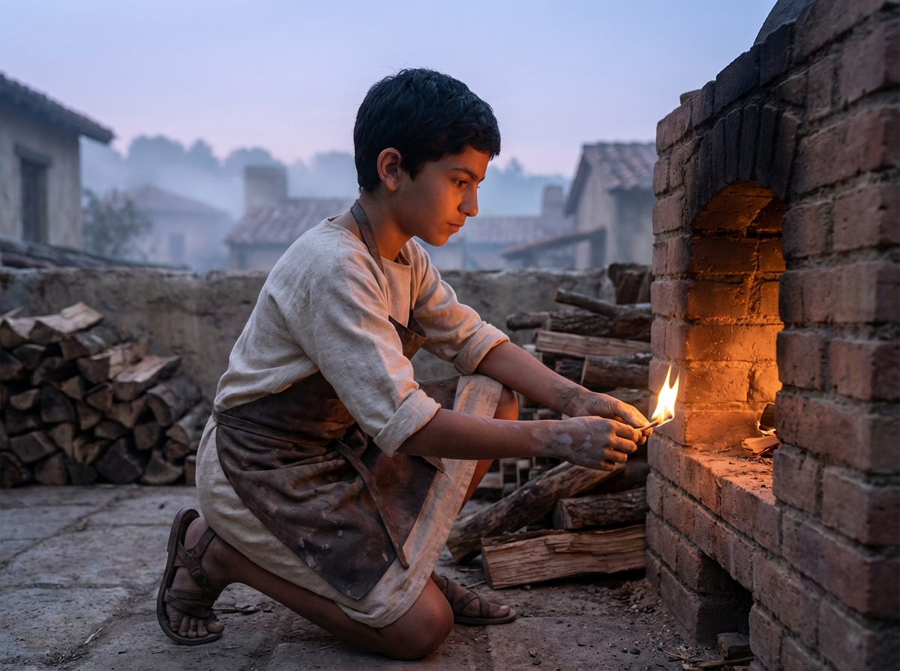

The Potter's Slow Fire
A Tale of Patience
Mediterranean Coast · 12th Century

A Tale of Patience
Mediterranean Coast · 12th Century


Every evening, Nico climbed the hill above the village and watched the kiln smoke curl into the wind. He imagined it rising faster, taller, carrying his name with it.
At twelve, he was already good with his hands. He shaped bowls for his mother and cups for his brothers. But each piece took days to dry, and the firing took longer still.
He wanted quicker work and louder praise, a way to make a hundred pots in a morning. The slow rhythm of clay and ash felt too small for the size of his hope.
There must be a faster way, he thought. There must be a secret in the old kiln.

One morning he walked to the oldest workshop near the harbor, where an old potter named Rafael worked in quiet light. Clay dust floated around him like a soft fog.
"You look like someone who wants something," Rafael said without looking up.
"I want to be fast," Nico admitted. "I want to be known."
Rafael finally met his eyes. They were calm, the color of wet earth.
"Then you should learn to go slowly," he said.

Rafael handed him a lump of clay and a smooth stone slab. "First," he said, "you must take the air out. If you rush, the fire will find the emptiness."
"This is just pounding," Nico complained.
"It is listening," Rafael answered. "The clay tells you where it hides its weaknesses."
Nico wedged the clay again and again, feeling the stones and grit yield under his palms. It was slow. It was also strangely satisfying.

Days became weeks. Rafael showed him how to center the clay, how to keep his thumbs steady, how to lift a wall without tearing it.
"Why so careful?" Nico asked, watching a bowl turn beneath his fingers.
"Because the rim remembers," Rafael said. "A careless touch becomes a crack later."
Nico began to see that each small motion mattered. The wheel did not forgive, but it did reward patience.

One afternoon a sudden storm swept in from the sea. The wind pulled at the kiln door, and the fire breathed too quickly.
When the kiln cooled, several pots lay cracked, their sides split like dry riverbeds.
"All that work," Nico said, feeling his throat tighten.
"The fire tests everything," Rafael said. "We do not work to avoid failure. We work to be ready for it."
Together they began again, mixing fresh clay and remaking each piece, slower than before.

Autumn brought cooler mornings. Nico learned to wake with the first light, to mix clay while the village slept, to stoke the kiln in steady breaths.
He was not less ambitious—only less hurried. The work had a rhythm, and he could finally hear it.
Rafael said little. When he did speak, it was enough. Keep the fire even, he would say. Let it do its work.

When the next firing finished, one small bowl came out whole and smooth. Nico held it like something fragile and rare.
At the market, a fisherman who had lost his wife asked quietly if there were any bowls for sale. Nico handed him the one he had made.
"You could have kept it," Rafael said.
"It feels heavier in his hands," Nico answered.
For the first time, Nico understood that a small thing could be enough when it reached the right place.

That winter Rafael fell ill for several weeks. Nico kept the workshop alive, lighting the kiln before dawn and tending it with steady care.
He did not know if his name would ever travel beyond the harbor. But he knew the shape of a good day, and how to honor it.
As the first flames caught, he felt a quiet promise settle inside him: to return, to be patient, to keep the fire slow and true.
The kiln did not answer. It simply warmed.
Answer the questions below to test what you learned from the story.
Slow fire, steady hands, lasting things.— A kiln-side saying